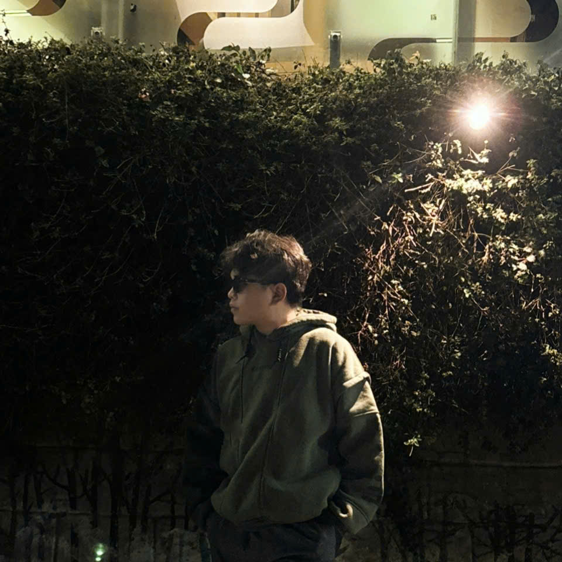

UEH · E-COMMERCE · WEEK 03
Hello, mình là Kiên.
Learning by building.
Một góc nhỏ để lưu lại những gì mình học được về HTML, CSS và cách biến một bố cục đơn giản thành giao diện dễ dùng.

Nguyễn Văn KiênUEH Student / E-commerce
CSS
is fun ✳
is fun ✳
Made with
HTML + CSS
HTML + CSS
09 trang thực hành HTML5 + CSS3 Báo cáo Word
A LITTLE BIT OF EVERYTHING
01 / 02My assignments.
Nhấn vào từng bài để xem demo, đọc giải thích CSS và kiểm tra kết quả.
01HỌC & LUYỆNCSS Selector GamesHai trò chơi giúp luyện cách chọn đúng phần tử.Selectors
02CSS CƠ BẢNTypography & OverflowKiểu chữ, viền, hiệu ứng chữ và xử lý tràn.Text styles
04BỐ CỤCNavigation MenuMenu ngang từ danh sách HTML thuần.Inline-block
05BỐ CỤCShared HostingTổ chức nội dung, CTA và phân cấp chữ.Landing page
06BỐ CỤCMy PortfolioLưới ảnh 9 mục và điều hướng danh mục.CSS Grid
07BỐ CỤCPage StructurePhân chia header, nav, main và footer.Flexbox
08aHIỆU ỨNGHeroes of WebChồng mô tả lên ảnh bằng z-index.Position
08bHIỆU ỨNGBat Family HoverCard mở rộng khi rê chuột hoặc focus.Interaction
09HIỆU ỨNGFont AwesomeGắn icon và xử lý hiển thị dự phòng.Icons
Bài 3 chọn phương án 3b (hoàn thành Bài 4–7). Bài 8 có cả hai phần a và b. Ảnh hoàn thành hai game ở Bài 1 cần bổ sung sau khi tự chơi.
THIS WEEK'S FOCUS
02 / 02Small details, better layouts.
Hai phần thực hành giúp mình hiểu rõ hơn cách bố trí và tạo tương tác bằng CSS.
Đây là website tổng hợp bài thực hành của học phần Phát triển ứng dụng WEB/TMĐT. Nội dung chủ yếu dùng HTML5 và CSS3; các chức năng động không nằm trong phạm vi bài tập tuần này.
Khám phá hành trình học